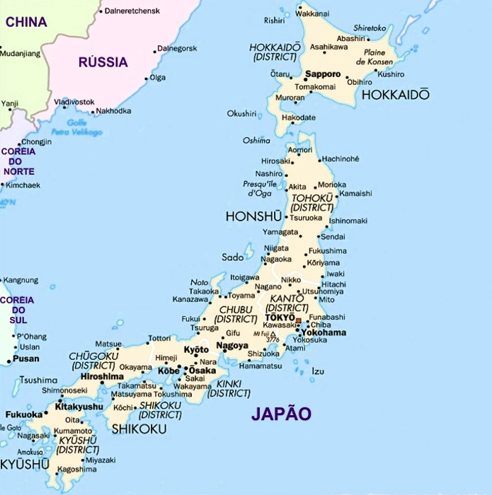

O povoamento do território hoje ocupado pelo Japão começou no século III a.C. A partir do século VI, a região foi unificada e, somente no século XVI, passou a ter contato com o europeu.
Por meio de navegadores portugueses e espanhóis, o Japão iniciou o processo de trocas comerciais com o mundo ocidental. Entre 1542 e 1543, navegadores portugueses atracaram na praia de Tanegashima.
Japoneses e portugueses iniciaram o processo de trocas comerciais. Porém, a imposição do cristianismo fez os governantes locais proibirem a entrada de estrangeiros e a saída de japoneses.
No século XVI, o Japão ainda limitava o comércio exterior aos portugueses e holandeses. Este isolamento, chamado de “sakoku”, tinha como objetivo preservar as tradições e costumes japoneses. Assim, estava proibia a entrada de estrangeiros na ilha e a saída de japoneses.
Este regime, sob o comando do clã Tokugawa, era militarizado. Começou em 1603 e perdurou até à chegada dos norte-americanos, em 1853. Um ano depois, o Japão assinava o Tratado de Kanagawa, que resultou no fim do domínio Tokugawa.
Através da Revolução Meiji, o processo de industrialização começou em 1868, quando o imperador Mitsuhito sobe ao poder.
Esse período foi denominado Era Meiji (1868-1912) e foi marcado pelos investimentos em meios de transporte, principalmente as ferrovias, bem como portos e minas. A educação voltada para a qualificação de mão de obra foi universalizada.
A economia foi dominada por clãs familiares que se infiltraram no comércio, nas finanças e na indústria de todos os portes.
Nesse período, o processo de industrialização foi dificultado pela falta de matéria-prima, energia e um limitado merado interno.
Na entativa de suplantar esses obstáculos, o governo decidiu investir no militarismo para conquistar novos territórios e formar colônias.
Entre as sucessivas campanhas militares, a primeira foi a Guerra Sino-japonesa, ocorrida entre 1894 e 1895. Nessa altura foi ocupada a Coreia e Taiwan. Quando derrotou a Rússia entre 1904 e 1905, o Japão conquistou as ilhas Sacalinas.
A Manchúria foi ocupada em 1931, para onde foi enviado Pu Yi, o último imperador chinês. Confiante nas vitórias, o Japão invadiu a China em 1937, conflito que integrava a Segunda Guerra Mundial.
Em 1941, o exército japonês invadiu Pearl Harbor, no Havaí, e provocou a entrada dos Estados Unidos na Segunda Guerra.
Os americanos combateram os japoneses em várias ilhas do Pacífico como Iwo Jiwa. Com o intuito de abreviar as batalhas, foram lançadas bombas atômicas sobre as cidades de Hiroshima, em 6 de agosto de 1945, e Nagasaki, três dias depois.
O Japão se rendeu em setembro de 1945 e foi obrigado a aceitar as imposições dos Estados Unidos, tornando-se seu principal aliado.
A maior transformação em termos sociais, econômicos e políticos na sociedade japonesa ocorreu ao fim da Segunda Guerra Mundial.
Os Estados Unidos determinaram a mudança do Japão no pós-guerra. Com objetivo de encerrar o regime feudal e o militarismo, os norte-americanos aplicaram diversas medidas:
Houve impacto na sociedade, na economia e na cultura japonesas sob a justificativa de modernizá-lo e sepultar seu passado feudal e militar.

Houve impacto na sociedade, na economia e na cultura japonesas sob a justificativa de modernizá-lo e sepultar seu passado feudal e militar. Os EUA permaneceram sob o controle do território japonês até 1952, quando o Japão recuperou a soberania. O modelo industrial japonês está entre as explicações para a rápida recuperação do país. A adoção do toyotismo garantiu que o país rapidamente alcançasse o posto de segunda nação mais rica do mundo nos anos 70.